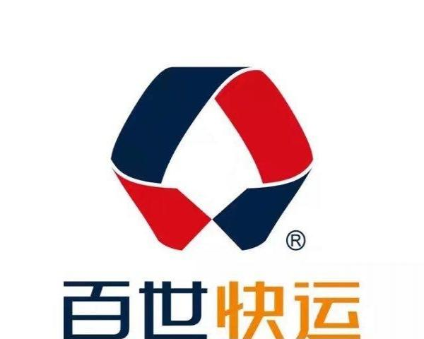
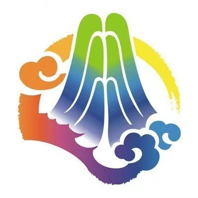
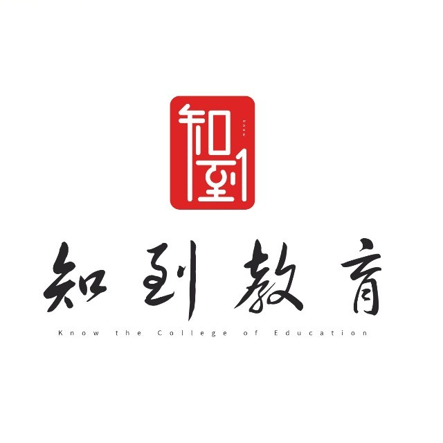
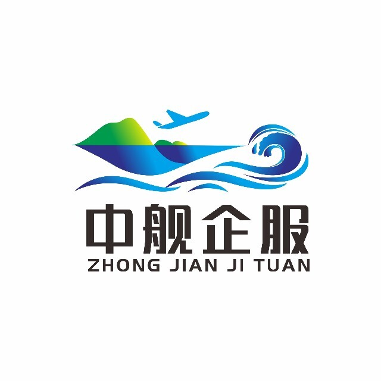
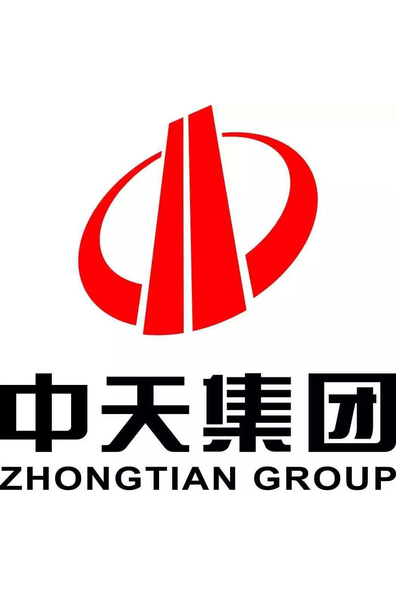
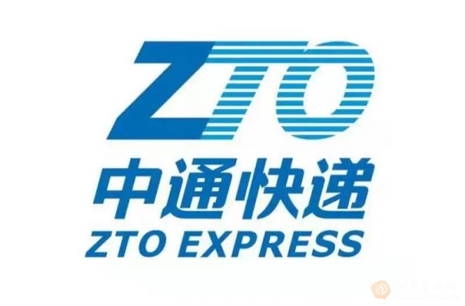
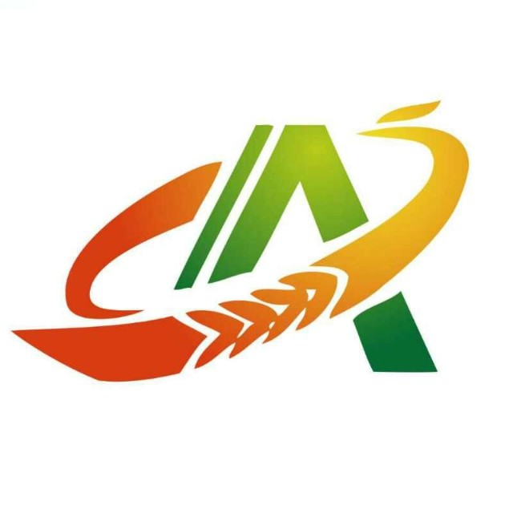
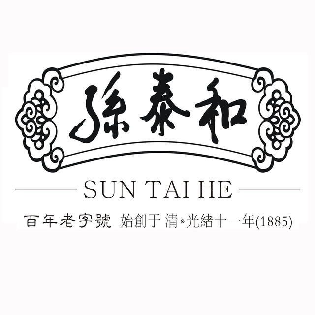
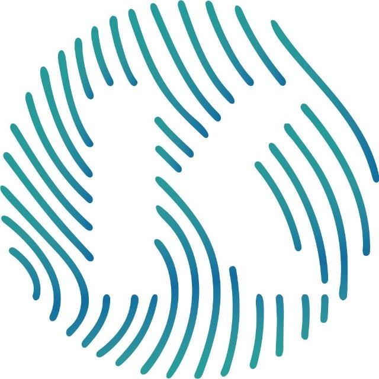

VIEWPOINT 01 · 关于人效
提效 ≠ 裁员，
是让每个人手里的低价值工作变少
- ✕不是先砍人——编制失控往往只是症状，根因在职责、流程与授权。
- ✓先定义岗位的关键产出，把重复、等待、返工从每天的工作里拿掉。
- ✓用系统承载 SOP——如鲸选智能工作台，把制度变成每个人都点得开的动作，新员工照着做就能到 80 分。
- ✓省下来的工时，转化为承接更多业务的能力：业务增长时，人员可以不增长。

不是培训，不是裁员，也不是 AI 工具售卖——是让人员增长慢于业务增长，把管理改善变成可衡量的经营结果。
百鲸咨询专注成长型企业的组织人效提升：当业务在增长、人越招越多、利润却没有同步上来时，我们从组织、岗位、人才和激励四个维度找到真正的原因，并用一轮可验证的改善证明它。
组织是否以较低内耗支持经营目标——层级、权责、协同与编制。
岗位工作是否产生高价值结果——岗位设计、流程、SOP 与 AI 场景。
合适的人是否在合适的岗位上——盘点、人岗匹配与能力发展。
贡献是否被正确评价和回报——绩效、奖金与长期激励。
基线 → 目标 → 试点 → 数据复盘 → 迭代。每一个改善动作，都要在数据里看见变化。

（保护客户隐私，作匿名处理；数据来自项目复盘）
实施顾问岗依赖两名老员工，SOP 写了没人用。重构任务清单后 SOP 进入工作台按单执行，新人照单作业，三个月内两批新人全部达标。
订单变更原来要过 5 层审批，管理层深陷日常签核。重设决策清单与授权后，常规事项一线直办，老板每周审批时间从 6 小时降到 40 分钟。
营收增长但利润率连续两年下滑。人才盘点识别错配后调整关键岗，项目奖金与毛利挂钩，第二年承接 30% 业务增长、一名未裁、一名未招。









 扫码添加微信
刘老师 · 百鲸咨询
扫码添加微信
刘老师 · 百鲸咨询